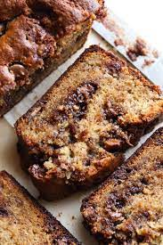

Lola Lou's Famous Banana Bread

Ingredients
- 1/2 cup oil
- 1 cup sugar
- 2 beaten eggs
- 1/3 cup milk
- 1 tbsp white vinger
- 1 tsp baking soda
- 1 3/4 cup flour
- 2 to 3 ripe bananas (mashed)
- cinnammon + sugar mix
Steps
- Preheat oven to 250 degrees. Grease Pan.
- Mix oil, sugar, and eggs with mixer on low for 1 minute.
- Add bananas to mixture to mixture until combined.
- Mix baking soda and flour in seperate bowl and slowly add to wet mixture.
- Pour into pans and add cinnamon sugar mix on top.
- Bake for 50 minutes. Use toothpick to test. Take out when toothpick comes out clean. DO NOT OVERBAKE